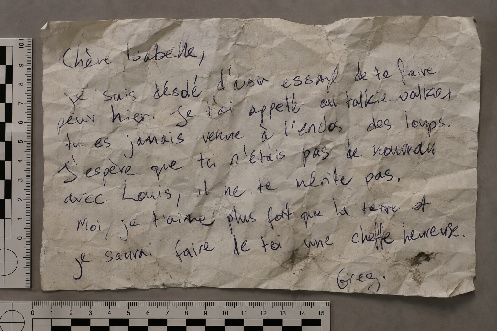
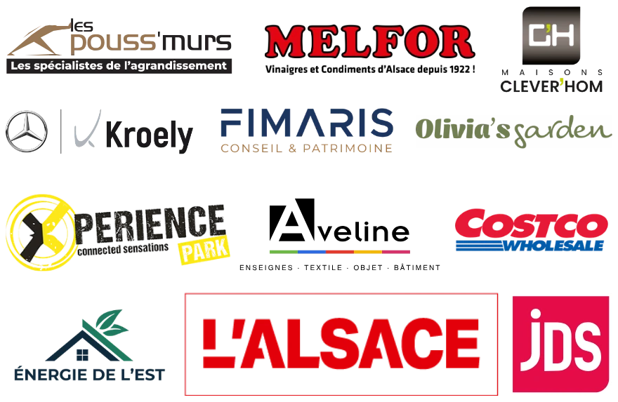

Félicitations, vous êtes à deux doigts d'élucider le mystère de la disparition d'Isabelle. Une scène se joue sous vos yeux, prenez le temps d'observer ce qu'il s'y passe et appuyez sur suivant
Qu'est-il arrivé à Isabelle ?

Une dernière pièce au dossier : la lettre de Greg.
C'est exactement cela. Isabelle a bu la tisane à la valériane de son collègue botaniste. Prise d'une grande fatigue, elle est retournée à la serre pour lui dire que le dosage était bien trop fort — et s'y est endormie. Personne n'a disparu, personne n'a été enlevé : elle dormait, à deux pas de tout le monde.
Vous tenez le bon fil : la tisane du botaniste est bien à l'origine de tout. Mais il n'a empoisonné personne. Le dosage de valériane était trop fort, Isabelle s'est sentie épuisée, elle est retournée à la serre pour le lui dire, et s'y est endormie. Une maladresse, pas un crime.
Ce n'est pas ce qui s'est passé. Personne ne lui a voulu de mal, et il ne lui est rien arrivé de grave. Elle a bu la tisane à la valériane du botaniste, dont le dosage était bien trop fort. Épuisée, elle est retournée à la serre pour l'avertir, et s'y est endormie. Elle dormait, à deux pas de vous, pendant que vous la cherchiez.
Avant de quitter la serre, prenez-vous en photo devant le photocall, et postez-la sur Instagram en identifiant @pomelolab.
Chaque jour, la meilleure photo est sélectionnée et reçoit un cadeau surprise.
Ouvrir InstagramTouchez les étoiles pour noter.
Votre avis n'a pas pu partir. Ce n'est pas grave, merci quand même !
Merci, votre avis compte beaucoup pour nous !
Vous pouvez aussi le dire sur Google : c'est ce qui aide le plus les prochains enquêteurs à nous trouver.
Laisser un avis GoogleVotre commentaire est copié : collez-le dans Google.
L'affaire est classée.
Merci d'avoir mené l'enquête

Sur l'affichette, à côté du QR code, se trouve un nombre à quatre chiffres. Saisissez-le.
Dites-nous ce qui ne va pas, l'équipe est prévenue tout de suite.
Indiquez un numéro de téléphone : c'est par là que nous allons vous débloquer.